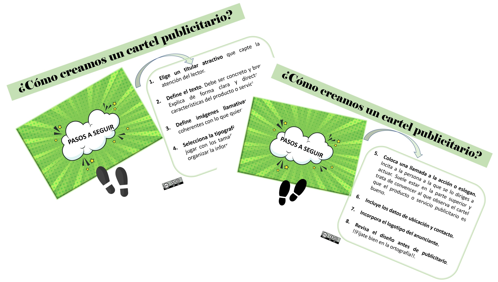

Organización previa
Una vez que se han preparado los recursos para el desarrollo del taller, llega el momento de organizar la puesta en práctica del mismo. El alumnado distribuido en equipos se encargará de realizar las diferentes tareas de organización y desarrollo. La siguiente puede ser una posible distribución de las mismas:
Tareas de logística
Equipo 1 :
- Revisión del aula dónde se va a realizar el evento para comprobar que la wifi, los ordenadores, el cañón... estén listos para su uso en las sesiones del taller.
Tareas de relaciones públicas
Equipo 2:
- Realización de las invitaciones para que cada alumno invite a uno o dos miembros de su familia que pertenezca a la tercera edad.
Equipo 3:
- Listado de participantes y confirmación de asistencia (no más de dos familiares de la tercera edad por alumno/a) .
- Recepción y control de asistencia los dos días del taller.
Tareas de comunicación
Equipo 4:
- Realización de un cartel publicitario.
Se proporcionará al alumnado el recurso didáctico ¿Cómo crear un cartel publicitario? (anexo 7)

Elaboración propia empleando Canva (CC BY-SA)
Equipo 5:
- Difusión anterior al evento con un anuncio en la web del instituto.
- Difusión posterior del evento en las redes sociales del centro.
Equipo 6:
- Creación del cuestionario de satisfacción para los asistentes.